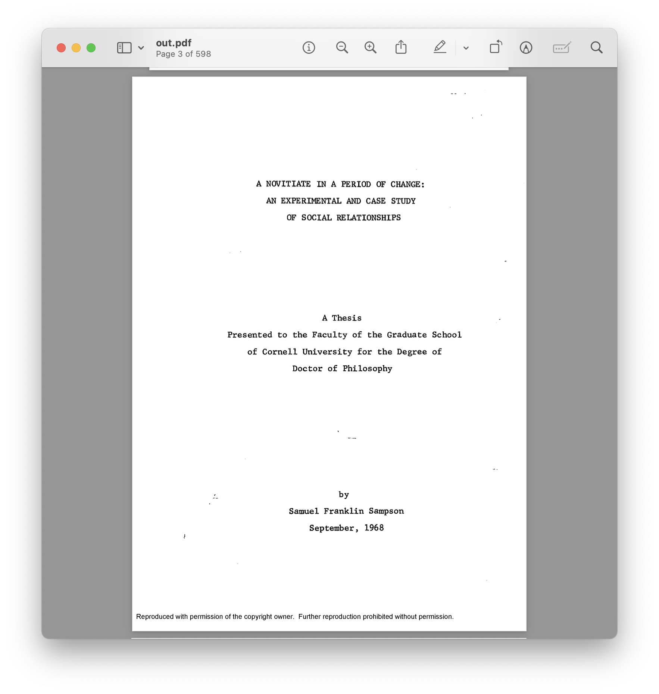
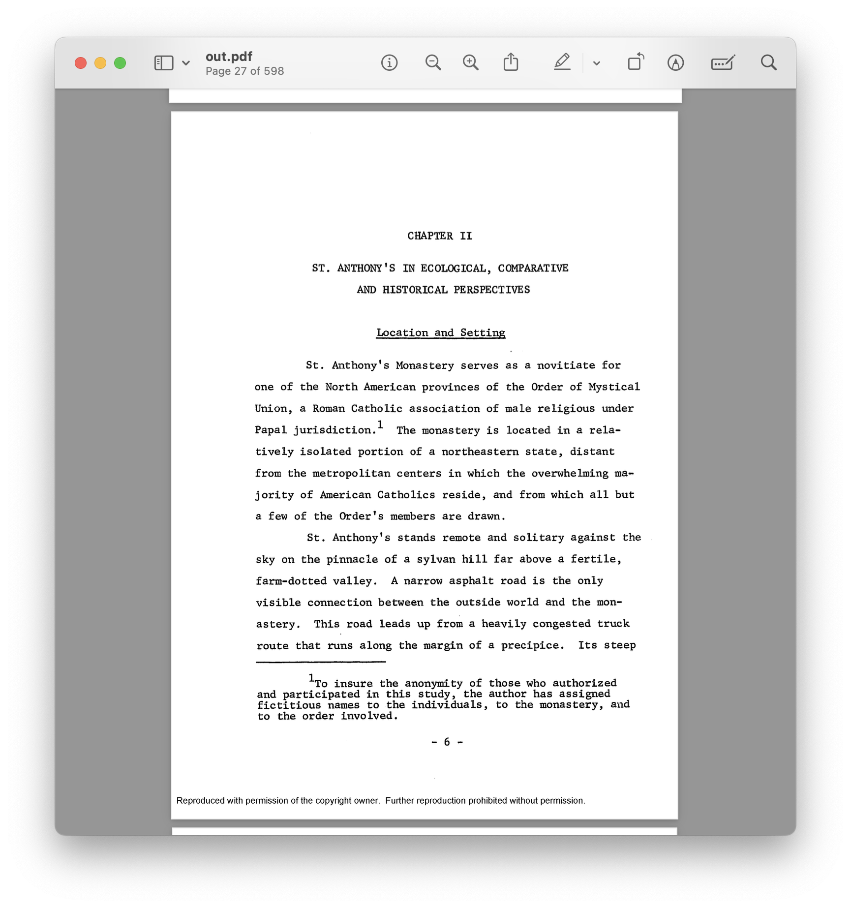
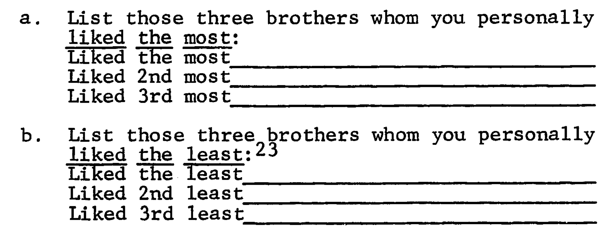
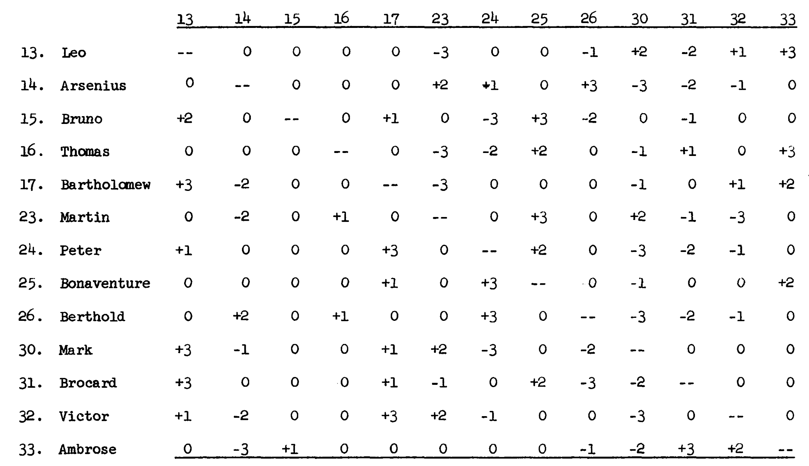

Extending Vectors
Matrices
Last Time
- An atomic vector holds elements of a single type.
- Special values mark data that is missing or undefined.
- Operations are vectorized and vectors are recycled.
- Mixing types triggers coercion.
- Elements are pulled out by subsetting.
Key Ideas for Today
- Comments mark text that R will not evaluate.
- Subsetting can be used to change a vector in place.
- A matrix is a vector with a dimension attribute.
- Matrices are subset by
[row, col]or by[el]. - Row- and column-wise summaries operate on whole margins.
While you’re waiting…
In your head, list the three Cal students you like the most. Do the same for the three Cal students you like the least.
A comment about comments
Comment Character
A special character that tells R to skip evaluation of the remaining characters on a line. R (and Python) use #.
[1] "A" "C" "D"Change in place syntax
You can assign into a subsetted vector to change its contents in place.
apple banana cherry
12 4 12 01:30
How we got here

Sampson’s Monks
Franklin Sampson, Sociology PhD
F. S. Sampson. A novitiate in a period of change: An experimental and case study of social relationships. PhD thesis, Cornell University. 1968.

F. S. Sampson. A novitiate in a period of change: An experimental and case study of social relationships. PhD thesis, Cornell University. 1968.

While you’re waiting…
In your head, list the three Cal students you like the most. Do the same for the three Cal students you like the least.
Sampson’s Questionnaire

Question: With a neighbor discuss two data structures that could store all 18 responses in one object (it need not be an atomic vector).
02:30

Matrices
Matrix
Matrix
A 2D data structure for atomic data. Created with matrix().
Note: defaults to fill the matrix by columns (byrow = FALSE)
Matrices as Vectors
Matrices are simply vectors with dimensions dim(). All vector behavior still applies.
Your Turn
Using what you know about how vectors work, predict the outcome of the following:
02:00
Guess the metaphor
A matrix is like a regular square tile floor: each tile is the same and arranged in a rectangular grid of rows and columns.
Matrix Subsetting
By Index
Notes:
- subsetting a matrix creates a vector
- empty subsetting vectors > all entries
By Name
By Logical
What’s going on here?
Row- and Column-wise Summaries
One number for the whole matrix
q1 q2 q3
ali 8 10 8
bo 6 5 4
cy 9 6 7
di 7 9 9Summarizing along a margin
Margin
One of the dimensions of a matrix: the rows or the columns. A margin-wise summary returns one value per row (or per column) instead of one value overall.
The four workhorses
| sums | means | |
|---|---|---|
| one value per row | rowSums() |
rowMeans() |
| one value per column | colSums() |
colMeans() |
Your Turn
Question
- Without running it, what is the length of
rowSums(scores)? OfcolMeans(scores)? - Which is bigger:
mean(scores)ormean(rowMeans(scores))? Why?
01:00
Visualizing network data
Key Ideas for Today
- Comments mark text that R will not evaluate.
- Subsetting can be used to change a vector in place.
- A matrix is a vector with a dimension attribute.
- Matrices are subset by
[row, col]or by[el]. - Row- and column-wise summaries operate on whole margins.
For Next Time
- Sign up for Quiz 1 on PrairieTest.
- Start Project 1: Sampson’s Monks.
- Work on problem set.